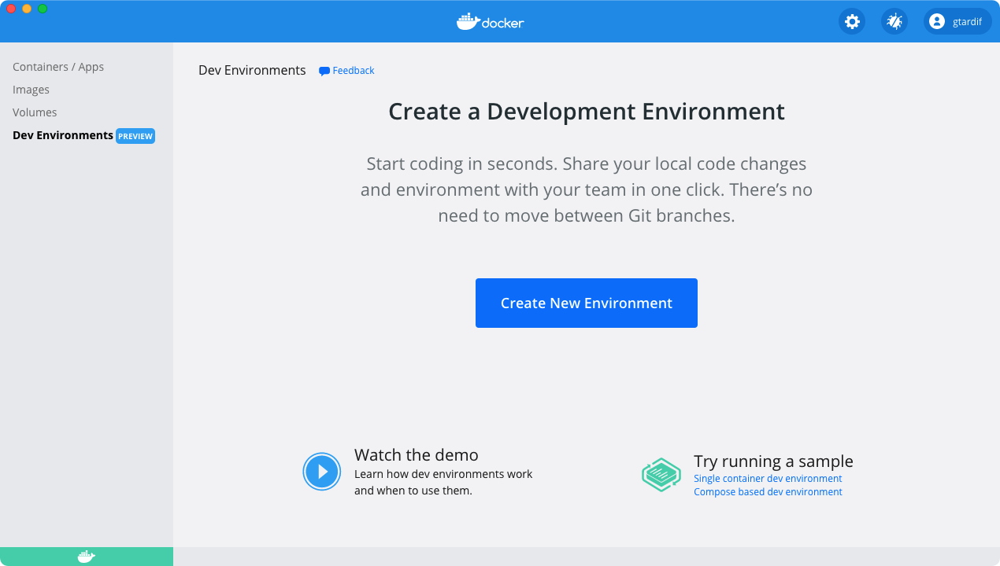
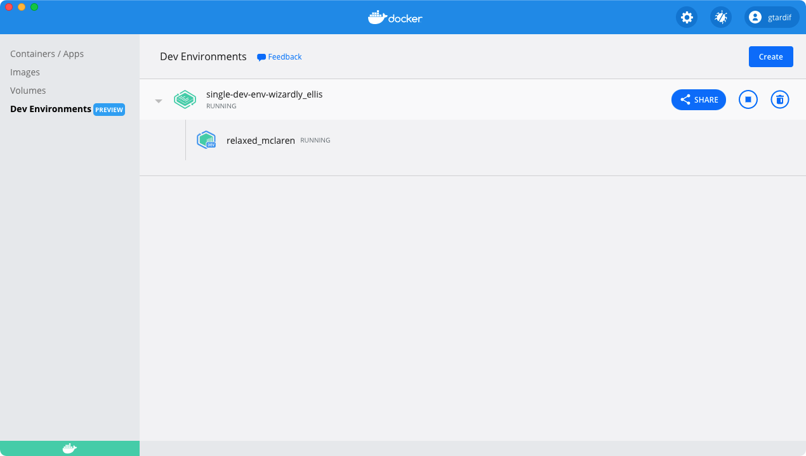
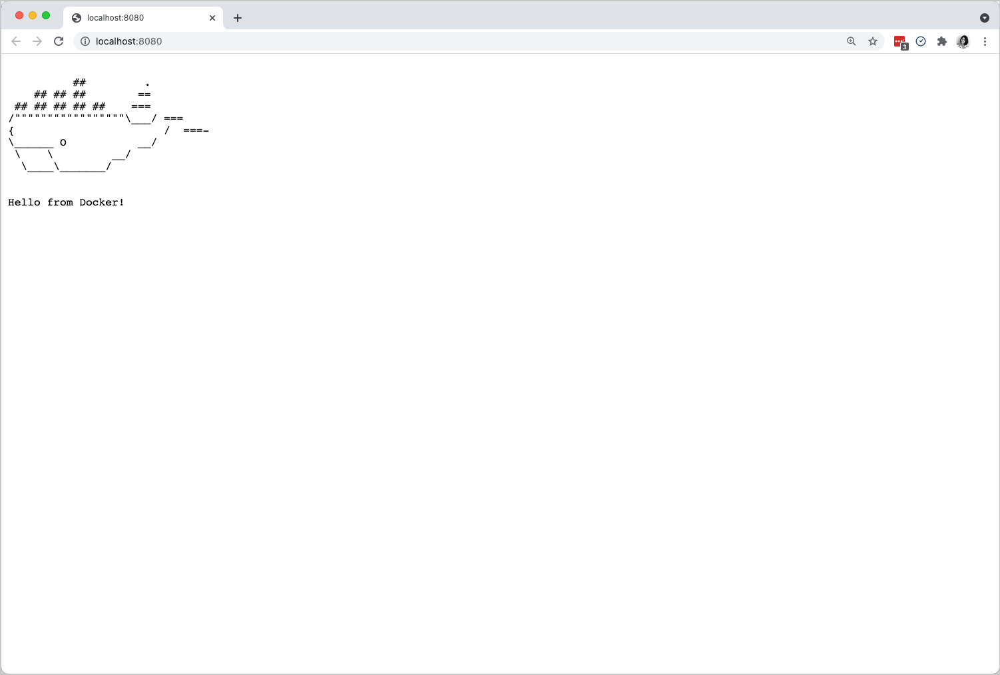
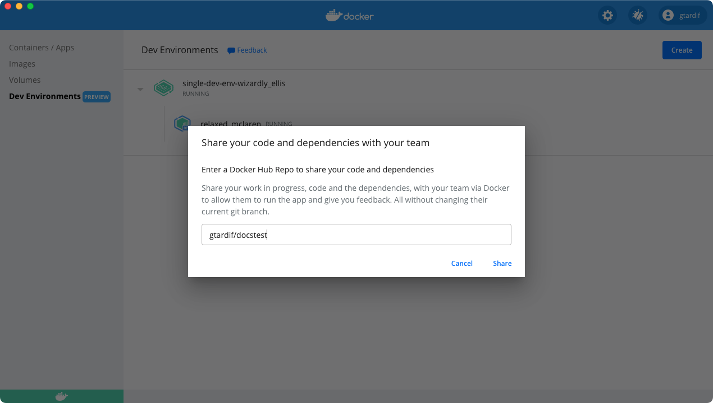
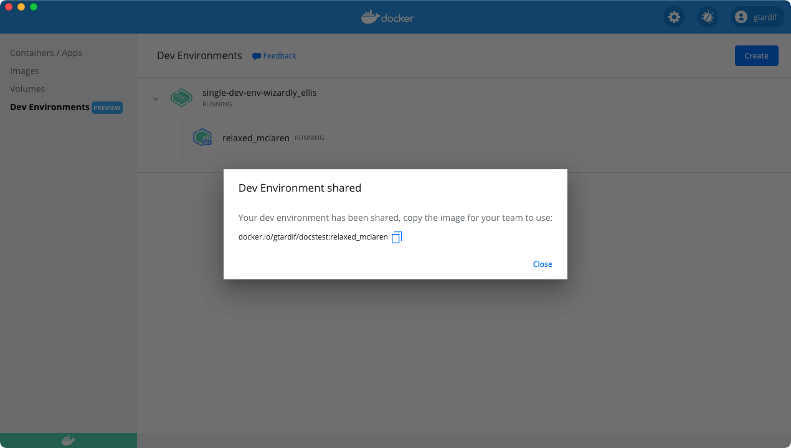
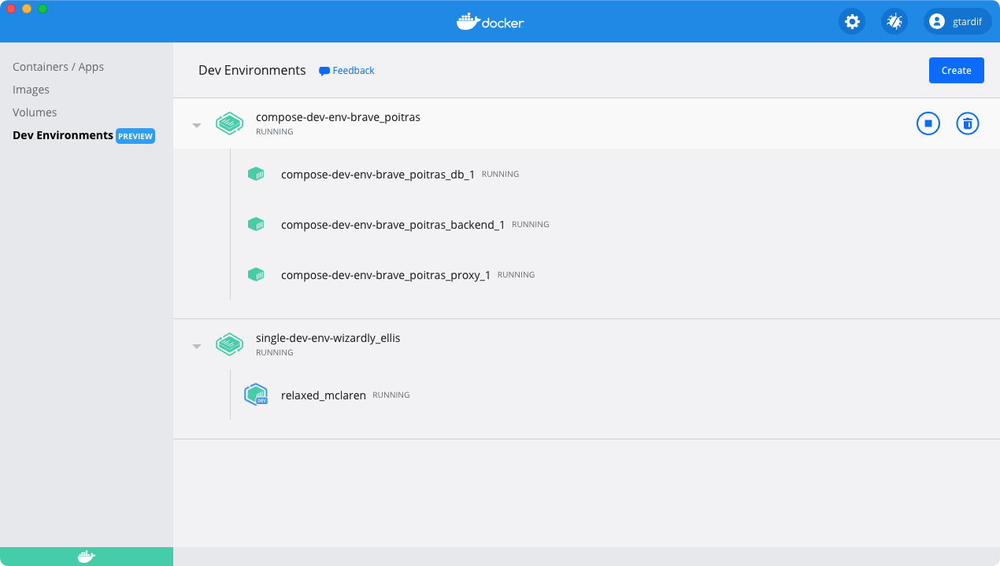

Development Environments Preview
Estimated reading time: 14 minutes
Dev Environments enable you to collaborate easily by allowing you to share work-in-progress code with your team members. When using Dev Environments, you can easily set up repeatable development environments, keeping the environment details versioned along with your code. You can also share your work-in-progress code with your team members in just one click and without having to deal with any merge conflicts while moving between Git branches to get your code on to their machine.
Dev Environments also allow you to switch between your developer environments or your team members’ environments, move between branches to look at changes that are in progress, without moving off your current Git branch.
Preview
The Dev Environments feature is currently offered as a Preview. We recommend that you do not use this in production environments.
To access Dev Environments, from the Docker menu, select Dashboard > Dev Environments.

Prerequisites
Dev Environments are available as part of Docker Desktop 3.5.0 release. Download and install Docker Desktop 3.5.0 or higher:
To get started with Dev Environments, you must have the following tools and extension installed on your machine:
Click Install to download and install any missing tools.
Add Git to your PATH on Windows
If you have already installed Git, and it’s not detected properly, run the following command to check whether you can use Git with the CLI or PowerShell:
$ git --version
If it doesn’t detect Git as a valid command, you must reinstall Git and ensure you choose the option Git from the command line... or the Use Git and optional Unix tools... on the Adjusting your PATH environment step.

Note
After you have installed Git, you must quit and then start Docker Desktop. From the Docker menu, select Quit Docker Desktop, and then start it again.
Start a single container Dev Environment
The simplest way to get started with Dev Environments is to create a new environment by cloning the Git repository of the project you are working on. For example, let us create a new Dev Environment using a simple single-dev-env project from the Docker Samples GitHub repository.
Note
When cloning a Git repository using SSH, ensure you’ve added your SSH key to the ssh-agent. To do this, open a terminal and run
ssh-add <path to your private ssh key>.
Note
If you have enabled the WSL 2 integration in Docker Desktop for Windows, make sure you have an SSH agent running in your WSL 2 distribution.
SSH_ENV="$HOME/.ssh/agent-environment"
function start_agent {
echo "Initialising new SSH agent..."
/usr/bin/ssh-agent | sed 's/^echo/#echo/' > "${SSH_ENV}"
echo succeeded
chmod 600 "${SSH_ENV}"
. "${SSH_ENV}" > /dev/null
}
# Source SSH settings, if applicable
if [ -f "${SSH_ENV}" ]; then
. "${SSH_ENV}" > /dev/null
ps -ef | grep ${SSH_AGENT_PID} | grep ssh-agent$ > /dev/null || {
start_agent;
}
else
start_agent;
fi
- Under Dev Environments, click Create. This opens the Create a Dev Environment dialog. Click Get Started and then copy
https://github.com/dockersamples/single-dev-env.gitand add it to the Enter the Git Repository field on the Existing Git repo source. -
Now, click Continue.
This clones the Git code inside a volume, determines the best image for your Dev Environment, and finally, opens VS Code inside the Dev Environment container.

In the above example, the names wizardly_ellis and relaxed_maclaren are randomly generated. You’ll most likely see different names when you create your Dev Environment.
Hover over the container and click Open in VS Code to start working in VS Code as usual. You can also open a terminal in VS Code, and use Git to push or pull code to your repository, or switch between branches and work as you would normally.
You can launch the application by running the command make run in your VS Code terminal. This opens an http server on port 8080. Open http://localhost:8080 in your browser to see the running application.

Create a Dev Environment from a specific branch or tag
You can create a dev environment from a specific branch (for example, a branch corresponding to a Pull Request) or a tag by adding @mybranch or @tag as a suffix to your Git URL:
https://github.com/dockersamples/single-dev-env@mybranch
or
git@github.com:dockersamples/single-dev-env.git@mybranch
Docker then clones the repository with your specified branch or tag.
Recap
Let’s summarize the tasks we performed so far to start a single container Dev Environment.
- First, we cloned a Git repository in a container using Git credentials. Note that this did not conflict with any of the local files on your host.
- The Go tools required for our sample project was set up automatically for us. Also, this did not cause any friction with our local tooling setup.
- Finally, we were able to run the application server inside a container using the VS Code terminal and access it automatically from the host.
Share your Dev Environment
Docker Pro, Team, and Business users can now share Dev Environments with their team members.
Upgrade nowWhen you are ready to share your environment, just click the Share button and specify the Docker Hub namespace where you’d like to push your Dev Environment to.

This creates a Docker image of your dev environment, uploads it to the Docker Hub namespace you have specified in the previous step, and provides a tiny URL which you can use to share your work with your team members.

Your team members need to open the Create dialog, select the Existing Dev Environment tab, and then paste the URL. Your Dev Environment now starts in the exact same state as you shared it.
Using this shared Dev Environment, your team members can access the code, any dependencies, and the current Git branch you are working on. They can also review your changes and provide feedback even before you create a pull request!
Start a sample Compose Dev Environment
You can also use Dev Environments to collaborate on any Docker Compose-based projects. For example, let’s use the compose-dev-env project from the Docker Samples GitHub repository.
Note
When cloning a Git repository using SSH, ensure you’ve added your SSH key to the ssh-agent. To do this, open a terminal and run
ssh-add <path to your private ssh key>.
- Under Dev Environments, click Create. This opens the Create a Dev Environment dialog. Click Get Started and then copy
https://github.com/dockersamples/compose-dev-env.gitand add it to the Enter the Git Repository field on the Existing Git repo source. -
Click Continue. This initializes the project and clones the Git code and builds the Compose application. This:
- Builds local images for services that are defined in the Compose file
- Pulls images required for other services
- Creates volumes and networks
- Starts the Compose stack

Now your application is up and running, you can check by opening http://localhost:8080 in your browser.
The time taken to start the Compose application depends on how your application is configured, whether the images have been built, and the number of services you have defined, etc.
You’ll also notice that VS Code doesn’t open directly (unlike the single container Dev Environment) as there are multiple services configured. You can hover over a service and then click on the Open in VS Code button to open a specific service in Visual Studio Code. This stops the existing container and creates a new container which allows you to develop and update your service in VS Code.
You can now update your service and test it against your Compose application.
Set up your own Compose Dev Environment
In the previous section, we’ve learnt how to start a sample Compose Dev Environment. To set up a Dev Environment for your own Compose-based project, you’ll need some extra configuration that tells Docker Desktop how to build, start, and use the right Dev Environment image for your services.
Dev Environments use an additional docker-compose.yaml file located in the .docker directory at the root of your project. This file allows you to define the image required for a dedicated service, the ports you’d like to expose, along with additional configuration options dedicated to Dev Environments coming in the future.
Let’s take a detailed look at the docker-compose.yaml file we used in the compose-dev-env sample project.
version: "3.7"
services:
backend:
build:
context: backend
target: development
secrets:
- db-password
depends_on:
- db
db:
image: mariadb
restart: always
healthcheck:
test: [ "CMD", "mysqladmin", "ping", "-h", "127.0.0.1", "--silent" ]
interval: 3s
retries: 5
start_period: 30s
secrets:
- db-password
volumes:
- db-data:/var/lib/mysql
environment:
- MYSQL_DATABASE=example
- MYSQL_ROOT_PASSWORD_FILE=/run/secrets/db-password
expose:
- 3306
proxy:
build: proxy
ports:
- 8080:80
depends_on:
- backend
volumes:
db-data:
secrets:
db-password:
file: db/password.txt
In the above yaml file, the build context backend specifies that that the container should be built using the development stage (target attribute) of the Dockerfile located in the backend directory (context attribute)
The development stage of the Dockerfile is defined as follows:
FROM golang:1.16-alpine AS build
WORKDIR /go/src/github.com/org/repo
COPY . .
RUN go build -o server .
FROM build AS development
RUN apk update \
&& apk add git
CMD ["go", "run", "main.go"]
FROM alpine:3.12
EXPOSE 8000
COPY --from=build /go/src/github.com/org/repo/server /server
CMD ["/server"]
The developmenttarget uses a golang:1.16-alpine image with all dependencies you need for development. You can start your project directly from VS Code and interact with the others applications or services such as the database or the frontend.
In our example, the Docker Compose files are the same. However, they could be different and the services defined in the main Compose file may use other targets to build or directly reference other images.
Specify a Dockerfile
In this preview, Dev Environments support a JSON file which allows you to specify a Dockerfile to define your Dev Environment. You must include this as part of the .docker folder and then add it as a config.json file. For example:
{
"dockerfile": "Dockerfile.devenv"
}
Next, you have to define the dependencies you want to include in your Dockerfile.devenv, alongside the following requisites:
While some images or Dockerfiles will include a non-root user, many base images and Dockerfiles do not. Fortunately, you can add a non-root user named vscode. If you were to include the Docker tooling (e.g. docker cli, docker compose, etc.) in the Dockerfile.devenv, you would need the vscode user to be included in the docker group.
# syntax=docker/dockerfile:1
FROM <your base image>
RUN useradd -s /bin/bash -m vscode \
&& groupadd docker \
&& usermod -aG docker vscode
USER vscode
Specify a base image
If you already have an image built, you can specify it as a base image to define your Dev Environment. You must include this as part of the .docker folder and then add it as a config.json file. For example, to use the Jekyll base image, add:
{
"image": "jekyll/jekyll"
}
Note
This configuration is to unblock users for the Preview release only. We may move this configuration for single and multi-container applications to a Compose-based implementation in future releases.
To get involved with the discussion on how we are going to implement this as part of Compose, join the #docker-dev-environments channel in the Docker Community Slack, or let us know your feedback by creating an issue in the Dev Environments GitHub repository.
Start a Dev Environment from a local folder
You can also start a Dev Environment from local code on your machine.
- Click Create to open the Create a Dev Environment dialog. Select the Local Folder tab, and click Select directory to open the root of the code that you would like to work on.
-
Now, click Create.
This creates a Dev Environment using your local folder, and bind-mounts your local code in the Dev Environment. Finally, it opens VS Code inside the Dev Environment container.
Note
When using a local folder for a Dev Environment, file changes are synchronized between your Dev Environment container and your local files. This can affect the performance inside the container, depending on the number of files in your local folder and the operations performed in the container.
Known issues
The following section lists known issues and workarounds in the Dev Environments Preview:
- It is currently not possible to share Compose-based applications using Dev Environments because registries do not support Compose applications. Refer to the Feedback section to let us know your requirements for sharing Compose-based applications.
- When sharing a Dev Environment between Mac and Windows, the VS Code terminal may not function correctly in some cases. To work around this issue, use the Exec in CLI option in the Docker Dashboard.
- When sharing a Dev Environment between ARM64 and AMD64 machines, the environment will be emulated.
Feedback
We are excited that you are trying out our Dev Environments Preview. We would love to hear from you.
You can let us know your feedback by creating an issue in the Dev Environments GitHub repository. Alternatively, get in touch with us on the #docker-dev-environments channel in the Docker Community Slack.
Dev Environments, share, collaborate, local